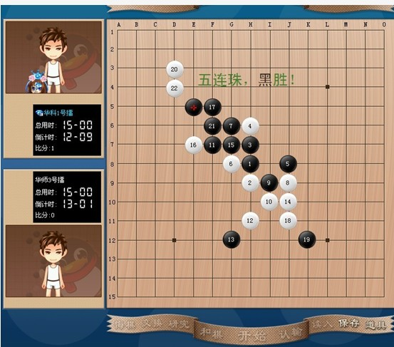

第一届博雅棋社网络擂台赛（往事可忆不可追）
#1 第一届博雅棋社网络擂台赛（往事可忆不可追） 作者：吉小鼠 发表时间：2013-5-24 1:42:06
毕业季，思绪颇多，某刻突然想起了以前五子棋部在一起时发生的一些好玩的事情，然后在电脑里面翻到了当初的记录，到现在已经两年多了，往事却还依然历历在目。想着，一直收藏着怕也是辜负了。便发出来给大家看看了。下的棋是好是不好都不重要，最重要的是大家都还在一起。
————————————————————————————分割线———————————————————————————————————
第一届博雅棋社网络擂台赛
—— 紫轩比赛全追踪
时间 ： 2011.01.15
地点 ： QQgame 五子棋三手二 100 桌 密码 XXX
规则 ：三手交换五手两打
一局定输赢，不许悔棋。胜者为擂主，其余人轮流攻擂，攻下者为下一任擂主，如此直至比赛结束。
参赛人员 ：华师：小鼠（华师 1 号擂），周游（华师 2 号擂），天才（华师 3 号擂）
华科 ：萌萌（华科 1 号擂），超超（华科 2 号擂）
农大 ：海恋姐姐（农大 1 号擂）
武大 ：董行
总裁判 ：紫轩（博雅群擂裁判）
围观 ：天逸，鹾老前辈，月饼，蓝姐姐。
第一轮第一局 小鼠 （黑） VS 萌萌 （白）
瑞星开局，萌萌执白开瑞星团十二，双方各走一招定后，小鼠黑 15 强变， 16 、 17 定， 18 变招，开始一系列交换，最终小鼠（黑）在右边无比厚势之下杀棋。
第一轮第二局 小鼠 （黑） VS 海恋姐姐 （白）
第一轮第三局 海恋姐姐 （白） VS 周游 （黑）
海恋姐姐假黑方开局，疏星，周游换，第五手海恋姐姐给一打。 7 手周游变招，海恋姐姐果断抓禁。
第一轮第四局 海恋姐姐 （白） VS 萌萌 （黑）
第一轮第五局 萌萌 （黑） VS 天才 （白）

第一轮第六局 萌萌 （黑） VS 超超 （白）
超超假黑方开丘月，萌萌交换， 2 打大定，萌萌 7 手变，超超应白 8 。之后由于双方对此强变 7 不熟，故每步甚是小心。之后黑方逐渐把优势引至上方，经超超几手弱防（海恋姐姐语）后， 21 手强做杀，胜局已定。
［此帖子已被 吉小鼠 在 2013-5-24 2:32:33 编辑过］
［ 圊籽 于 2013-5-24 7:31:08 时花20金币送鲜花一朵］
［ 圊籽 于 2013-5-24 7:31:08 时花20金币送鲜花一朵］
［ 圊籽 于 2013-5-24 7:31:08 时花20金币送鲜花一朵］
［ 圊籽 于 2013-5-24 7:31:08 时花20金币送鲜花一朵］
［ 圊籽 于 2013-5-24 7:31:08 时花20金币送鲜花一朵］
［ 圊籽 于 2013-5-24 7:31:08 时花20金币送鲜花一朵］
［ 换你一笑 于 2013-5-24 11:32:10 时花20金币送鲜花一朵］
［ 换你一笑 于 2013-5-24 11:32:10 时花20金币送鲜花一朵］
［ 换你一笑 于 2013-5-24 11:32:10 时花20金币送鲜花一朵］
［ 换你一笑 于 2013-5-24 11:32:10 时花20金币送鲜花一朵］
［ 换你一笑 于 2013-5-24 11:32:10 时花20金币送鲜花一朵］
［ 换你一笑 于 2013-5-24 11:32:10 时花20金币送鲜花一朵］
［ 米兰 于 2013-5-24 12:56:35 时花20金币送鲜花一朵］
［ 米兰 于 2013-5-24 12:56:35 时花20金币送鲜花一朵］
［ 米兰 于 2013-5-24 12:56:35 时花20金币送鲜花一朵］
［ 米兰 于 2013-5-24 12:56:35 时花20金币送鲜花一朵］
［ 米兰 于 2013-5-24 12:56:35 时花20金币送鲜花一朵］
［ 釣鱼岛岛主 于 2013-5-24 13:59:49 时花20金币送鲜花一朵］
［ 釣鱼岛岛主 于 2013-5-24 13:59:49 时花20金币送鲜花一朵］
［ 釣鱼岛岛主 于 2013-5-24 13:59:49 时花20金币送鲜花一朵］
［ 釣鱼岛岛主 于 2013-5-24 13:59:49 时花20金币送鲜花一朵］
［ 釣鱼岛岛主 于 2013-5-24 13:59:49 时花20金币送鲜花一朵］
［ 烟雨淋晨尘 于 2013-5-27 20:07:58 时花20金币送鲜花一朵］
［ 烟雨淋晨尘 于 2013-5-27 20:07:58 时花20金币送鲜花一朵］
［ 烟雨淋晨尘 于 2013-5-27 20:07:58 时花20金币送鲜花一朵］
［ 烟雨淋晨尘 于 2013-5-27 20:07:58 时花20金币送鲜花一朵］
［ 烟雨淋晨尘 于 2013-5-27 20:07:58 时花20金币送鲜花一朵］
#2 Re:第一届博雅棋社网络擂台赛（往事可忆不可追） 作者：吉小鼠 发表时间：2013-5-24 1:48:07
第二轮第一局 萌萌 （黑） VS 小鼠 （白）
小鼠瑞星开局，萌萌换，之后 2 打定到团十二。萌萌 17 变招。之后萌萌在上方做棋，小鼠强防， 35 手上，萌萌失去先手。小鼠 38 手做棋，萌萌经长考后不理会小鼠下方的做棋， 39 攻至上方，几经强攻后，萌萌 47 手长考后做棋，小鼠强防， 61 手后，萌萌未注意小鼠 V ，而小鼠的两次漏杀，使得萌萌利用先手化解了小鼠的杀棋，局面再次呈现胶着状态。 81 手上，萌萌再次丢掉先手，小鼠下方白厚势，做几手棋后果断杀掉萌萌。
第二轮第二局 小鼠 （白） VS 海恋姐姐 （黑）
第二轮第三局 海恋姐姐 （白） VS 超超 （黑）
超超斜月开局，又是二打， 7 手变招。 9 手超超弱防，之后连续几招继续弱防（可能超超刷 DNF 累了），最后活三不挡（超超：刚电脑杀毒，鼠标飘了）被海恋姐姐无情灭杀。
第二轮第四局 海恋姐姐 （黑） VS 超超 （白）
第二轮第五局 超超 （白） VS 萌萌 （黑）
第二轮第六局 萌萌 （黑） VS 天才 （白）
第二轮第七局 天才 （白） VS 小鼠 （黑）
第二轮第八场 天才 （黑） VS 董行 （白）
此局历经一个多小时，为本次比赛历时最长的一局，其中精彩不断。
［ 圊籽 于 2013-5-24 7:36:15 时花20金币送鲜花一朵］
［ 圊籽 于 2013-5-24 7:36:15 时花20金币送鲜花一朵］
［ 圊籽 于 2013-5-24 7:36:15 时花20金币送鲜花一朵］
［ 圊籽 于 2013-5-24 7:36:15 时花20金币送鲜花一朵］
［ 圊籽 于 2013-5-24 7:36:15 时花20金币送鲜花一朵］
#3 Re:第一届博雅棋社网络擂台赛（往事可忆不可追） 作者：吉小鼠 发表时间：2013-5-24 1:50:28
剧终：
通过本次比赛，博雅棋社五子棋部群内几位活跃分子相互促进共同讨教，互增友谊。
最后董行弟弟成为本次比赛最大的黑马，以一局挑战擂主而成为本次比赛最大的赢家
#4 Re:第一届博雅棋社网络擂台赛（往事可忆不可追） 作者：吉小鼠 发表时间：2013-5-24 2:19:33
2011年1月，那时候的我才大二，五子棋部成立刚满一年。大家在一起已经经历了两次高校比赛，第一次团体第二，第二次团体第一。感情是这样慢慢的在一起的战斗中积累起来的吧。萌萌弟和超超弟（这两个称呼好像好久都没有出现了）虽然都不是我们学校的，可是在一起久了在我们心里他们早就是我们之中的一员。然后海恋姐姐是因为认识月饼的缘故被拉到了我们群里（典型的走后门~），那时候我们除了月饼谁都没见过他，哈哈，貌似当初是因为我们看他的名字都以为是女生，所以都叫他姐姐，然后到最后他自己都会自称“姐姐我”了，“海恋姐姐”这个称呼自此传播开来~ 这段时间貌似也是我们群里最热闹的一段时间。可惜我们的擂台赛就弄了两次，之后是寒假我们没网的没网没时间的没时间，就再也没有继续过了。（海恋姐姐当初在写五子棋部的时候答应要把你写进去现在在这里写了算不。。。我不会告诉你其实就算你说不算也是算的。。。）
然后语塞了。不知道继续下去要说什么，打算改天把“献给五子棋部系列”的终结篇给写了，在这个毕业季，最后纪念下我与五子棋部的这份缘分。
［此帖子已被 吉小鼠 在 2013-5-24 2:37:20 编辑过］
#5 Re:第一届博雅棋社网络擂台赛（往事可忆不可追） 作者：圊籽 发表时间：2013-5-24 7:40:34
截图里面聊天好好玩~~
#6 Re:第一届博雅棋社网络擂台赛（往事可忆不可追） 作者：换你一笑 发表时间：2013-5-24 11:35:06
我以为的学妹，竟然比我大一届。。。（不过看你发的帖子里面的照片，以为是个高中生来着的。。。）#7 Re:第一届博雅棋社网络擂台赛（往事可忆不可追） 作者：罗源棋手 发表时间：2013-5-24 12:44:50
海恋是梧桐么？#8 Re:换你一笑【==Re:第一届博雅棋社网络擂台赛（往事可忆不可追）==】 作者：吉小鼠 发表时间：2013-5-24 12:54:52
嘿嘿 学弟好~ 这就叫人不可貌相咯~~ 你那明年也要毕业咯 好好把握大学的美好时光吧~
［ 换你一笑 于 2013-5-24 22:44:38 时花20金币送鲜花一朵］
［ 换你一笑 于 2013-5-24 22:44:38 时花20金币送鲜花一朵］
［ 换你一笑 于 2013-5-24 22:44:38 时花20金币送鲜花一朵］
［ 换你一笑 于 2013-5-24 22:44:38 时花20金币送鲜花一朵］
［ 换你一笑 于 2013-5-24 22:44:38 时花20金币送鲜花一朵］
［ 换你一笑 于 2013-5-24 22:44:38 时花20金币送鲜花一朵］
#9 Re:罗源棋手【==Re:第一届博雅棋社网络擂台赛（往事可忆不可追）==】 作者：吉小鼠 发表时间：2013-5-24 12:55:38
答曰：是的~ 话说海恋姐姐今天还没来论坛，有点奇怪啊~~#10 Re:第一届博雅棋社网络擂台赛（往事可忆不可追） 作者：湮落梓涵 发表时间：2013-5-24 13:13:11
几年前的五子棋部美好回忆呀，好怀念
#11 Re:第一届博雅棋社网络擂台赛（往事可忆不可追） 作者：釣鱼岛岛主 发表时间：2013-5-24 14:04:48
期待第二届#12 Re:釣鱼岛岛主【==Re:第一届博雅棋社网络擂台赛（往事可忆不可追）==】 作者：吉小鼠 发表时间：2013-5-24 14:37:19
第二届在第一届的一周后再玩了一次。。。然后就木有然后了- - ！
#13 Re:第一届博雅棋社网络擂台赛（往事可忆不可追） 作者：梧桐风 发表时间：2013-5-25 23:04:09
求楼上详细报道#14 Re:梧桐风【==Re:第一届博雅棋社网络擂台赛（往事可忆不可追）==】 作者：吉小鼠 发表时间：2013-5-26 0:03:05
。。。。。。。。两次你都在好么